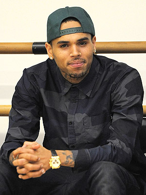
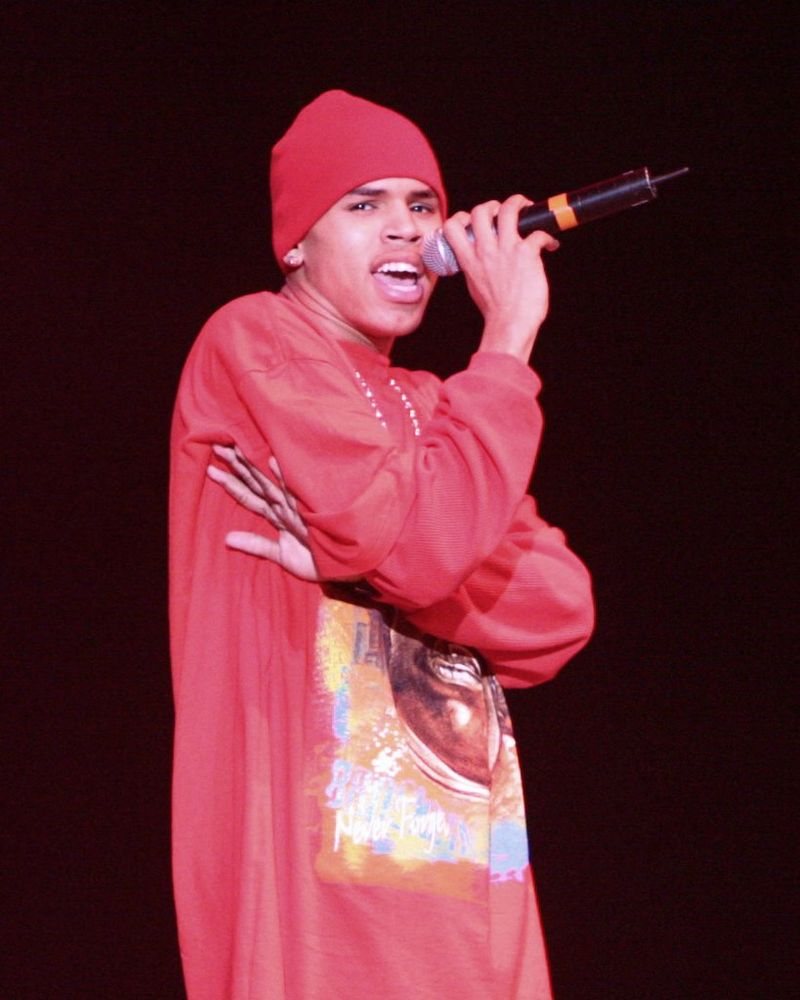
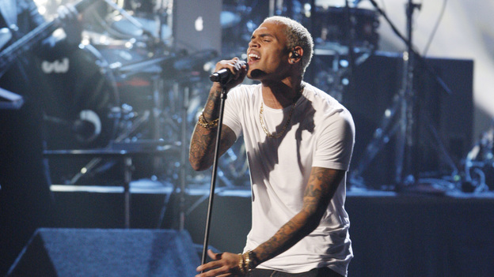
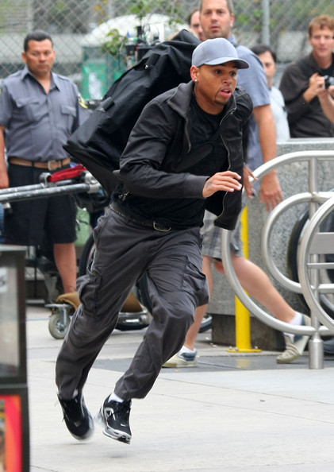

Chris Brown
Dati biografici

Christopher Maurice Brown, meglio noto come Chris Brown, è nato a Tappahannock
il 5 maggio 1989, è un cantante, attore, ballerino e rapper statunitense.
Ha debuttato nel 2005 con l'album Chris Brown all'età di 16 anni.
Nell'album era contenuto il singolo Run It! che raggiunse la vetta della
classifica Billboard, rendendo Chris Brown uno dei pochi ad essere arrivati
in vetta alla classifica con il suo singolo di debutto.
Il suo primo album ha venduto due milioni di copiesoltanto negli Stati Uniti
e più di tre milioni in tutto il mondo.
Carriera musicale

Chris è nato e cresciuto nella piccola città di Tappahannock in Virginia, dove fin dall'inizio ricevette l'influenza di artisti come Michael Jackson e Sam Cooke.
È il primo di due figli di Clinton Brown e Joyce Hawkins. Ballerino sin dall'età di due anni, desiderò dapprima diventare un rapper, ma dagli 11 anni in poi capì che il suo futuro doveva essere nell'R&B.
Nel 2002, all'età di 13 anni, Brown è stato notato alla stazione di servizio di suo padre da un team di produzione, che era alla ricerca di talenti.
Nell'agosto del 2004, Brown, che aveva adattato il nome d'arte di "C-Syzle", attirò l'attenzione di Tina Davis, Senior executiveina esecutiva A&R della Def Jam Recordings,
e li fece il suo provino per l'Island Def Jam Music Group, davanti ad Antonio L.A. Reid.
Successivamente Antonio L.A. Reid gli offrì un contratto, che la Davis gli consigliò di rifiutare. Successivamente la Davis perse il suo lavoro, a causa di una ristrutturazione aziendale,
dopo che la Def Jam Recordings e la Roc-A-Fella Records si unirono.
Lo stesso giorno, Brown la assunse come suo manager e si trasferì nella sua casa nel New Jersey. Dopo settimane di ricerca per un'etichetta, Brown ebbe un contratto con la Jive Records.
Brown abbandonò la scuola per dedicarsi interamente alla sua musica. Brown poi iniziò a registrare l'album a Miami, con Mark Pitts, l'A&R della Jive Records,
che fece firmare a Brown con la casa discografica.
A quel punto, registrarono circa 50 canzoni per il suo primo album. L'album inizialmente doveva intitolarsi Young Love, ma l'idea è stata scartata poiché venne
considerata troppo adolescienziale.
L'album, intitolato Chris Brown, uscì il 29 novembre del 2005. Il primo singolo Run It! divenne presto una hit di enorme successo e raggiunse la n. 1 in vari paesi come appunto Stati Uniti, Giappone e Australia.
Il secondo fu Yo (Excuse Me Miss), che si piazzò invece alla posizione n. 7 della classifica statunitense e alla n. 13 nel Regno Unito.
Il terzo singolo, uscito nel marzo del 2006, fu Gimme That, che si piazzò dapprima alla n. 80 della Billboard Hot 100 e salì poi in classifica (il brano è stato realizzato con Lil' Wayne ma è presente nell'album
senza il featuring).

Carriera come attore

Brown ha fatto alcune apparizioni nelle serie televisive trasmesse One on One e Brandon T. Jackson Show. Inoltre, Brown ha avuto un ruolo ricorrente nella popolare serie The O.C. nel 2007.
Il suo debutto cinematografico è avvenuto quello stesso anno nel film Stepping - Dalla strada al palcoscenico, in cui ha recitato insieme a Ne-Yo, Meagan Good e Columbus Short,
a cui è seguito il film This Christmas - Natale e altri guai.
Il 9 luglio 2007, Brown è comparso in un episodio di My Super Sweet 16 (reintitolato per l'occasione: Chris Brown: My Super 18)
durante il quale ha festeggiato il suo diciottesimo compleanno.
Brown ha partecipato anche in Zack e Cody al Grand Hotel nel ruolo di se stesso e nel 2009 è stata annunciata la sua partecipazione al film Phenom.
Nel 2013 è uscito invece Battle of the Year - La vittoria è in ballo che lo vede come protagonista insieme agli altri attori Josh Peck e Josh Holloway.